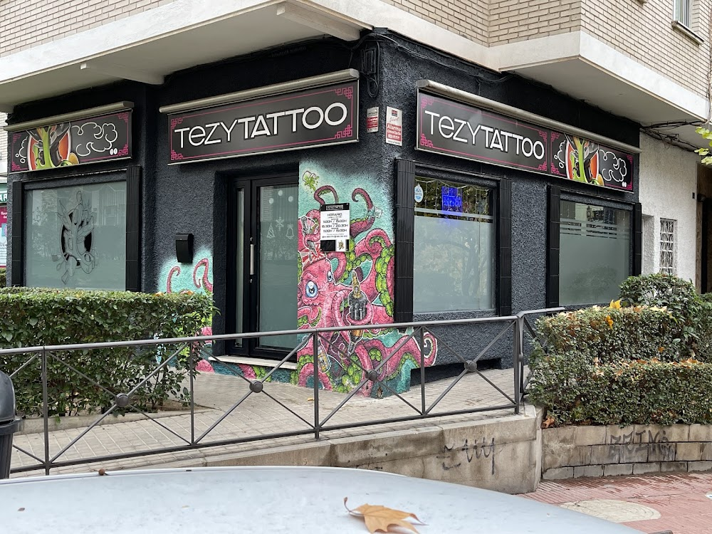
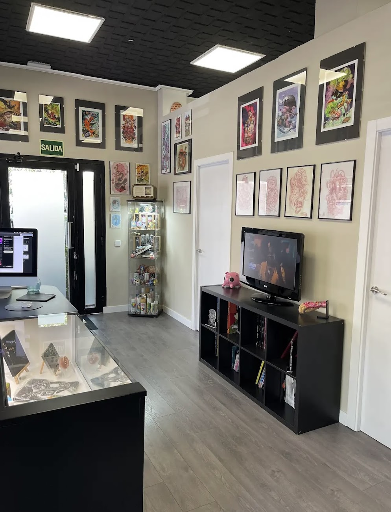

Diseño personalizado, higiene impecable y un equipo (Miguel y Rubén) que se toma su tiempo contigo, sesión a sesión, en San Sebastián de los Reyes.
Diseños únicos pensados para lo que quieras contar en tu piel.
Piezas de detalle fino, sombreado limpio y color duradero.
Transformamos tatuajes antiguos en un diseño completamente nuevo.
Material esterilizado y joyería de calidad para cualquier zona.
Mantenimiento de color y trazo para que tu tatuaje siga como el primer día.
Trabajamos el boceto contigo hasta dar con la idea exacta.


Material esterilizado y protocolos estrictos en cada sesión.
Miguel y Rubén cuidan cada detalle, sin prisas, resolviendo tus dudas.
Fácil acceso en Av. de Guadarrama, sin desplazarte al centro de Madrid.
4,9 sobre 5 en Google con 194 reseñas reales de clientes.
Cuéntanos tu idea o el piercing que quieres.
Preparamos el boceto contigo hasta que encaje.
Buscamos el día que mejor te venga.
Disfrutas del proceso y del resultado final.
"Después de años viniendo aquí, puedo decir que no es solo un estudio, es un sitio de confianza. Miguel siempre supera mis expectativas."
"Ha sido una experiencia de 10. Era mi primer tatuaje y desde el primer momento me hizo sentir muy cómodo, con muchísima paciencia."
"Mi primer tattoo me lo hice con Rubén, híper profesional, haciendo seguimiento después para ver que todo iba bien. Un grande."